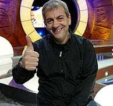
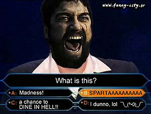

Carlos Sobera
 De: La Frikipedia, la enciclopedia extremadamente seria.
De: La Frikipedia, la enciclopedia extremadamente seria.
De la serie grandes personajes:
Cara que se le quedó cuando el
banco le comentó que le quedaban por pagar 35 años de
hipoteca
| Nacimiento
|
Con comodín del público
|
| Muerte
|
Cuando quiebre Antena 3
|
| Ocupación
|
Provocar confusiones mentales a los intrépidos concursantes
|
| Nacionalidad
|
Cagüen la mar, me se ha olvidao
|
| Malo o bueno
|
Adorable (-_-")
|
| Atentados contra la humanidad
|
Destruir varios edificios con su ceja izquierda
|
| Religión
|
Sólo cuando quiere
|
| Notas
|
Si te lo cruzas por la calle, no le mires a la frente
|
Prototipo de robot creado por Antena 3, cuyas cejas quedaron defectuosas ya que eran fabricadas en América, y se disparan involuntariamente por los aires de cuando en cuando.
Función Operativa
Carlos Sobera o "España" habla vasco y pocas veces lo habla, se encarga de presentar todos los programas tipo concursos que crea su cadena televisiva materna, y esque si inspeccionamos su chip interno, podremos descubrir su historial de presentador, que engloba tres grandes bloques:
- Infinitos programas de ¿Quién quiere ser millonario? Sus imagenes son grabadas, lo unico que cambian son los concursantes.
- Concursos chorra que duran dos días que se han sacao de la manga los de Danpena 3 y que una persona normal no podría ni descifrar ni comprender sus reglas, como el que ahora se han inventao: Jeopardy, que promete ser el apogeo de su carrerra.
- Presentar galas inútiles de premios que hasta el momento eran totalmente desconocidos.
Biografía
Un científico loco decidió crear un robot que cambiaría el mundo y ayudaría a combatir el mal.
Para ello, utilizó:
- Y muchas cosas bonitas...
Pero el doctor se descuidó y echó a la mezcla un ingrediente secreto... La sustancía... bah, que más dará.
Cuando salió el espécimen, su creador se dio cuenta de que no tenía cejas. Para solucionarlo, decidió añadirle unas de titanio. Mientras le formateaba el disco duro y le metía los valores nuevos del movimiento de las cejas, no se enteró que la había cagao le insertó mal los numeros, al no distinguir un 6 de un 9.
El robot sufrió una sobrecarga en las cejas y en vez de luchar contra el Mal, se metió a luchar contra la inteligencia y la dignidad humana en Antena 3. El especimen era velludo, vasco y con una nariz prominente y una calenturienta mente. Presume de buena dotación y de ser un buen partido.
Frases célebres
 San Carlos Sobera en todo su explendor y con su aureola que le otorga el título de Santidad y Patrón de los Justos.
- "¿Está seguro?" Mientras arquea una ceja.
- "¿No quieres utilizar el comodín de la llamada?". Mientras arquea una ceja.
- "¿A quién prefieres llamar para este comodín: a tu mujer o a la mujerzuela con la que la pones los cuernos?". Mientras arquea una ceja.
- "Veamos, parece que el público está de acuerdo, un 49 % opina que es la opción B, un 50% se decanta por la C y un 1% por la J". Mientras arquea una ceja.
- "Tu eres güeno amigo, eres mu güeno." Tirándole los tejos a un concursante despistao. Mientras arquea una ceja.
- "Positivooooooooo". Para confirmarte que estás embarazado/a. Mientras arquea una ceja.
Típica conversación en 50x15
Carlos -¿Te plantas? (Mientras arquea una ceja.)
Concursante -No sé… espera.
Carlos -¡A la de tres se plantó! (Mientras arquea una ceja.)
Concursante -¡Joputaaa!
Vídeos sagrados de San Carlos
 Concursante en
Quien quiere ser un Millonario? Vídeos no oficiales y por tanto ofensivos
Autor(es):
- Nexo
- Frikiman
- Azulejos
- Conan
- Sealand18
- Abelpower
- YoGandul
- Amigo26sbd
- Dimpedicurs
Frikipedia 2005-2016, Licencia
GFDL 1.2 - Extraído por FrikiLeaks